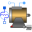

PartialBasicMachinePartial model for quasi static multi phase machines |
Diagram
{kind=link}
Information
This information is part of the Modelica Standard Library maintained by the Modelica Association.
This partial model for induction machines contains elements common in all machine models.
Parameters (16)
| Jr |
Value: Type: Inertia (kg·m²) Description: Rotor inertia |
|---|---|
| useSupport |
Value: false Type: Boolean Description: Enable / disable (=fixed stator) support |
| Js |
Value: Type: Inertia (kg·m²) Description: Stator inertia |
| useThermalPort |
Value: false Type: Boolean Description: Enable / disable (=fixed temperatures) thermal port |
| p |
Value: Type: Integer Description: Number of pole pairs (Integer) |
| fsNominal |
Value: Type: Frequency (Hz) Description: Nominal frequency |
| TsOperational |
Value: Type: Temperature (K) Description: Operational temperature of stator resistance |
| Rs |
Value: Type: Resistance (Ω) Description: Stator resistance per phase at TRef |
| TsRef |
Value: Type: Temperature (K) Description: Reference temperature of stator resistance |
| alpha20s |
Value: Type: LinearTemperatureCoefficient20 (¹/K) Description: Temperature coefficient of stator resistance at 20 degC |
| effectiveStatorTurns |
Value: 1 Type: Real Description: Effective number of stator turns |
| Lssigma |
Value: Type: Inductance (H) Description: Stator stray inductance per phase |
| L0 |
Value: Type: SalientInductance Description: Salient inductance of an unchorded coil |
| frictionParameters |
Value: Type: FrictionParameters Description: Friction loss parameter record |
| statorCoreParameters |
Value: Type: CoreParameters Description: Stator core loss parameter record; all parameters refer to stator side |
| strayLoadParameters |
Value: Type: StrayLoadParameters Description: Stray load loss parameter record |
Outputs (10)
| gammas |
Default Value: airGap.gammas Type: Angle (rad) Description: Angle of stator reference frame |
|---|---|
| gammar |
Default Value: airGap.gammar Type: Angle (rad) Description: Angle of stator reference frame |
| gamma |
Default Value: airGap.gamma Type: Angle (rad) Description: Electrical angle between stator and rotor |
| phiMechanical |
Default Value: flange.phi - internalSupport.phi Type: Angle (rad) Description: Mechanical angle of rotor against stator |
| wMechanical |
Default Value: der(phiMechanical) Type: AngularVelocity (rad/s) Description: Mechanical angular velocity of rotor against stator |
| tauElectrical |
Default Value: inertiaRotor.flange_a.tau Type: Torque (N·m) Description: Electromagnetic torque |
| tauShaft |
Default Value: -flange.tau Type: Torque (N·m) Description: Shaft torque |
| powerBalance |
Type: PartialPowerBalanceInductionMachines Description: Power balance |
| vs |
Default Value: plug_sp.pin.v - plug_sn.pin.v Type: ComplexVoltage[m] Description: Complex stator voltage |
| is |
Default Value: plug_sp.pin.i Type: ComplexCurrent[m] Description: Complex stator current |
Connectors (7)
| flange |
Type: Flange_a Description: Shaft |
|
|---|---|---|
| support |
Type: Flange_a Description: Support at which the reaction torque is acting |
|
| plug_sp |
Type: PositivePlug Description: Positive plug of stator |
|
| plug_sn |
Type: NegativePlug Description: Negative plug of stator |
|
| thermalPort |
Type: PartialThermalPortInductionMachines Description: Thermal port of induction machines |
|
| internalThermalPort | ||
| internalSupport |
Type: Support |
Components (17)
| L0 |
Type: SalientInductance Description: Salient inductance of an unchorded coil |
|
|---|---|---|
| frictionParameters |
Type: FrictionParameters Description: Friction loss parameter record |
|
| statorCoreParameters |
Type: CoreParameters Description: Stator core loss parameter record; all parameters refer to stator side |
|
| strayLoadParameters |
Type: StrayLoadParameters Description: Stray load loss parameter record |
|
| powerBalance |
Type: PartialPowerBalanceInductionMachines Description: Power balance |
|
| vs |
Type: ComplexVoltage[m] Description: Complex stator voltage |
|
| is |
Type: ComplexCurrent[m] Description: Complex stator current |
|
| inertiaRotor |
Type: Inertia |
|
| inertiaStator |
Type: Inertia |
|
| fixed |
Type: Fixed |
|
| stator |
Type: SymmetricMultiPhaseWinding Description: Symmetric stator winding including resistances, zero and stray inductances and core losses |
|
| thermalAmbient | ||
| groundS |
Type: Ground Description: Ground of stator magnetic circuit |
|
| airGap |
Type: RotorSaliencyAirGap |
|
| groundR |
Type: Ground Description: Ground of rotor magnetic circuit |
|
| strayLoad |
Type: StrayLoad |
|
| friction |
Type: Friction |
Extended by (5)
|
Modelica.Magnetic.QuasiStatic.FundamentalWave.BasicMachines.SynchronousMachines
Synchronous reluctance machine with optional damper cage |
|
|  |
Modelica.Magnetic.QuasiStatic.FundamentalWave.BasicMachines.SynchronousMachines
Electrical excited synchronous machine with optional damper cage |
|
Modelica.Magnetic.QuasiStatic.FundamentalWave.BasicMachines.SynchronousMachines
Permanent magnet synchronous machine with optional damper cage |
|
|
Modelica.Magnetic.QuasiStatic.FundamentalWave.BasicMachines.InductionMachines
Induction machine with slip ring rotor |
|
|
Modelica.Magnetic.QuasiStatic.FundamentalWave.BasicMachines.InductionMachines
Induction machine with squirrel cage |